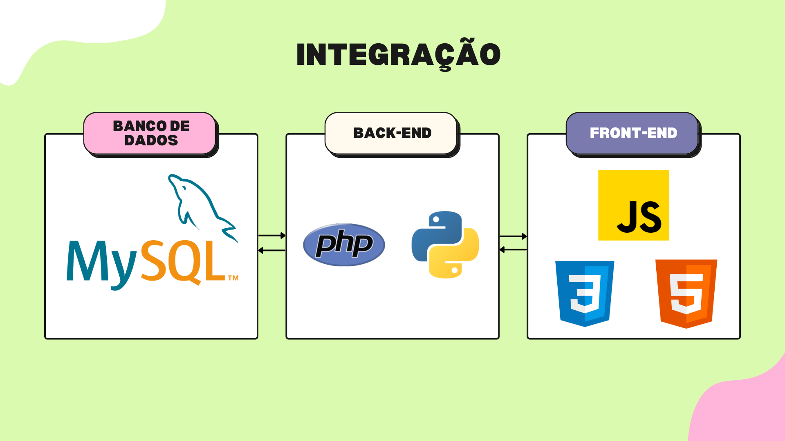

Dashboard.
TimeLine
2023 - Presente
Projeto
Pessoal
Ferramentas
Js, PHP, CSS, HTML e Python
Visão Geral
Desenvolvi um dashboard interativo voltado para a gestão de equipe dentro da metodologia ágil, inspirada no Scrum. Ao criar essa ferramenta, percebi a importância de apresentar informações de maneira clara e objetiva, promovendo uma interação fluida. Isso tem sido um grande auxílio no dia a dia, pois compreender o que precisa ser realizado pode se tornar complexo.
Consegui combinar com eficiencia as linguagens de programação como PHP, Python e JavaScript para criar uma solução completa, proporcionando uma experiência de usuário envolvente e funcionalidade robusta.
Curioso sobre como foi feito essa integração?
Integração Sinérgica:
Desde a manipulação de dados com Pandas até a criação de um dashboard dinâmico, exploramos a interconexão entre linguagens como Python, PHP e JavaScript.
Além disso, a combinação de Python para análise de dados e PHP para comunicação com um banco de dados MySQL exemplifica a colaboração harmoniosa de diferentes sistemas.
Esse projeto ressalta a capacidade de adaptar-se às demandas tecnológicas atuais, integrando habilidades multifacetadas para produzir soluções inovadoras e funcionais.

Aplicações
Na etapa de Frontend, com JavaScript e a biblioteca Chart.js, demos vida aos dados. Gráficos interativos ganharam forma, permitindo a exibição dinâmica das informações. A interação do usuário também ganhou destaque, permitindo atualizações em tempo real.
Após ajustes minuciosos e resolução de desafios, garantimos uma integração perfeita entre Backend e Frontend. Nossa criação resultou em um Dashboard que vai além da visualização de dados, proporcionando insights em um ambiente amigável e intuitivo.
Nossa jornada reflete a harmonia entre PHP, Python e JavaScript, construindo um Dashboard dinâmico e eficiente. E com a exploração de possibilidades futuras, estamos prontos para criar soluções ainda mais poderosas.